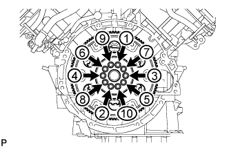
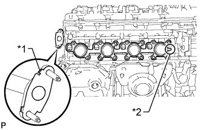
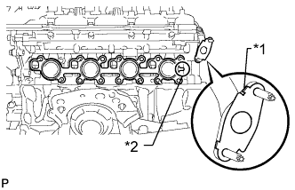
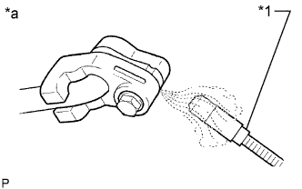

ENGINE ASSEMBLY > INSTALLATION |
| 1. INSTALL ENGINE HANGER |
Install 2 engine hangers with 2 bolts as shown in the illustration.
| Engine Hanger | 12281-38150 |
| Bolt | 90119-14120 |
| 2. REMOVE ENGINE STAND |
 |
Attach an engine sling device and hang the engine with a chain block.
| *1 | Engine Hanger |
| *2 | Engine |
| *a | 50° or less |
Lift the engine and remove it from the engine stand.
Place the engine onto a workbench.
| 3. INSTALL NO. 1 WATER BY-PASS PIPE |
Connect the 2 water hoses and install the No. 1 water by-pass pipe.
| *1 | Paint Mark |
| *a | Upper Side |
| *b | RH Side |
| 4. INSTALL ENGINE ASSEMBLY |
Attach an engine sling device and hang the engine with a chain block.
Slowly lower the engine into the engine compartment.
 |
Install the front engine mounting insulator LH and RH with the 2 nuts and 4 bolts.
 | Bolt |
 | Nut |
Remove the 2 bolts and 2 engine hangers.
| 5. INSTALL DRIVE PLATE AND RING GEAR SUB-ASSEMBLY |
Using SST, hold the crankshaft.
 |
Install the crankshaft angle sensor rotor.
| Engine Side |
 |
Install the drive plate and ring gear and the rear drive plate spacer to the crankshaft.
| *1 | Drive Plate and Ring Gear |
| *2 | Rear Drive Plate Spacer |
| Transmission Side |
Install the drive plate and ring gear and bolts.
Clean the bolts and bolt holes.
 |
Apply adhesive to 2 or 3 threads at the end of each of the 10 bolts.
| *1 | Adhesive |
|  |
Step 1:
Uniformly install and tighten the 10 new bolts in several steps in the sequence shown in the illustration.
Mark the top of each drive plate installation bolt with paint.
Step 2:
Tighten the drive plate installation bolts 90°.
Check that the painted marks are now at a 90° angle to the top.
| 6. INSTALL REAR NO. 1 ENGINE MOUNTING INSULATOR |
Install the rear No. 1 engine mounting insulator to the transmission with the 4 bolts.
Install the rear engine mounting heat insulator to the rear No. 1 engine mounting insulator with the bolt.
| 7. INSTALL AUTOMATIC TRANSMISSION ASSEMBLY |
Install the automatic transmission assembly (Click here).
| 8. INSTALL DRIVE PLATE AND TORQUE CONVERTER CLUTCH SETTING BOLT |
 |
Turn the crankshaft to gain access to the installation locations of the 6 torque converter clutch setting bolts and install each bolt while holding the crankshaft pulley bolt with a wrench.
 |
Install the flywheel housing side cover.
| 9. INSTALL PROPELLER SHAFT ASSEMBLY |
Install the propeller shaft assembly (Click here).
| 10. INSTALL FRONT PROPELLER SHAFT ASSEMBLY |
Install the front propeller shaft assembly (Click here).
| 11. CONNECT OIL COOLER TUBE SUB-ASSEMBLY |
Connect the oil cooler tube with the bolt.
| 12. CONNECT ENGINE WIRE |
Connect the ECM connector.
 |
Attach the grommet to the wire harness support.
| *1 | Grommet |
| *2 | Wire Harness Support |
Pass the wire harness into the vehicle and install the wire harness support.
Connect the 6 connectors and attach the clamp.
Install the lower instrument panel (Click here).
for Engine Room RH Side:
 |
Attach the 3 wire harness clamps to connect the engine wire and connect the connector.
| *1 | Engine Wire |
| *2 | Ground Wire |
Connect the ground wire with the bolt.
for Engine Room LH Side:
Attach the wire harness clamp.
| *1 | No. 2 Engine Wire |
| *2 | Ground Wire |
Connect the No. 2 engine wire and ground wire with the 2 bolts.
Attach the 2 claws and connect the engine wire to the engine room relay block.
| *1 | Engine Wire |
| *2 | Engine Room Relay Block |
Install the nut to the engine room relay block.
Connect the connector.
 |
Connect the ground wire with the bolt.
| 13. CONNECT FUEL HOSE AND NO. 2 FUEL TUBE SUB-ASSEMBLY |
Connect the fuel hose and No. 2 fuel tube (Click here).
Attach the clamp and install the fuel pipe clamp to the fuel tube connector.
| 14. INSTALL FLYWHEEL HOUSING SIDE COVER |
| 15. INSTALL STARTER ASSEMBLY |
Install the starter with the 2 bolts.
Connect the starter connector.
Connect the starter wire with the nut.
Attach the starter wire clamp.
| 16. INSTALL STARTER COVER |
Install the starter cover with the 3 bolts.
| 17. INSTALL EXHAUST MANIFOLD ASSEMBLY RH |
|  |
Install a new gasket to the cylinder head and a new gasket to the No. 3 air tube.
| *1 | Claw |
| *2 | Tab |
Temporarily install the exhaust manifold with 9 new nuts.
Temporarily install the manifold stay with the 3 bolts.
 |
Tighten the 3 bolts in the sequence shown in the illustration.
 |
Uniformly tighten the 7 nuts that are not labeled A. Then tighten the 2 nuts labeled A in the illustration.
Connect the air fuel ratio sensor connector.
| 18. INSTALL NO. 1 EXHAUST MANIFOLD HEAT INSULATOR |
Install the heat insulator with the 3 bolts.
| 19. INSTALL EXHAUST MANIFOLD ASSEMBLY LH |
|  |
Install a new gasket to the cylinder head and a new gasket to the No. 4 air tube.
| *1 | Claw |
| *2 | Tab |
Temporarily install the exhaust manifold with 9 new nuts.
Temporarily install the No. 2 manifold stay with the 3 bolts.
 |
Tighten the 3 bolts in the sequence shown in the illustration.
 |
Uniformly tighten the 7 nuts that are not labeled A. Then tighten the 2 nuts labeled A in the illustration.
Connect the air fuel ratio sensor connector.
| 20. INSTALL NO. 2 EXHAUST MANIFOLD HEAT INSULATOR |
Install the heat insulator with the 3 bolts.
| 21. INSTALL NO. 1 EGR PIPE SUB-ASSEMBLY |
Install 2 new gaskets.
 |
Install the EGR pipe with 4 new nuts and tighten the nuts in the sequence shown in the illustration.
| 22. INSTALL ENGINE OIL LEVEL DIPSTICK GUIDE |
Apply a light coat of engine oil to a new O-ring.
Install the O-ring to the dipstick guide.
Install the dipstick guide with the bolt.
Install the dipstick.
| 23. INSTALL FRONT EXHAUST PIPE ASSEMBLY |
 |
Using a plastic-faced hammer and wooden block, tap in a new gasket until its surface is flush with the front exhaust pipe.
| *1 | Gasket |
| *2 | Wooden Block |
Install a new gasket and the front exhaust pipe to the exhaust manifold RH with 2 new nuts.
 |
Using a vernier caliper, measure the free length of the compression spring.
Connect the front exhaust pipe to the center exhaust pipe with the 2 compression springs and 2 bolts.
Connect the heated oxygen sensor connector.
| 24. INSTALL FRONT NO. 2 EXHAUST PIPE ASSEMBLY |
Install 2 new gaskets and the front No. 2 exhaust pipe to the exhaust manifold LH with 2 new nuts.
Connect the front No. 2 exhaust pipe to the front exhaust pipe with the 2 bolts.
Connect the front No. 2 exhaust pipe to the exhaust pipe support.
Connect the heated oxygen sensor connector.
| 25. INSTALL EXHAUST PIPE STOPPER BRACKET |
Install the stopper bracket with the 2 bolts.
| 26. INSTALL COOLER COMPRESSOR ASSEMBLY |
 |
Install the stud bolt.
Temporarily install the cooler compressor assembly with the 3 bolts and nut.
Tighten the 3 bolts and nut in the sequence shown in the illustration.
Connect the connector.
| 27. INSTALL SUCTION HOSE SUB-ASSEMBLY |
Remove the attached vinyl tape from the suction hose.
Sufficiently apply compressor oil to 2 new O-rings and the fitting surface of the cooler compressor.
Install the 2 O-rings to the suction hose.
Install the suction hose with the 2 bolts and nut.
| 28. INSTALL DISCHARGE HOSE SUB-ASSEMBLY |
Remove the attached vinyl tape from the discharge hose.
Sufficiently apply compressor oil to 2 new O-rings and the fitting surface of the cooler compressor.
Install the 2 O-rings to the discharge hose.
 |
Install the discharge hose with the 3 bolts.
| 29. INSTALL GENERATOR ASSEMBLY |
Install the generator with the 3 bolts and nut.
Connect the wire harness bracket to the generator with the bolt.
Attach the generator wire.
Connect the generator wire with the nut.
Install the terminal cap.
Connect the generator connector.
 |
Connect the No. 2 return tube bracket with the bolt.
| 30. INSTALL VANE PUMP ASSEMBLY |
Install the vane pump with the 2 bolts.
| 31. CONNECT PRESSURE FEED TUBE |
Install a new gasket to the pressure feed tube.
Connect the pressure feed tube and install the union bolt.
| 32. CONNECT NO. 1 OIL RESERVOIR TO PUMP HOSE |
Connect the No. 1 oil reservoir to pump hose to the vane pump assembly with the clip.
| 33. INSTALL INTAKE MANIFOLD |
 |
Place 2 new gaskets on the intake manifold.
Place the intake manifold on the cylinder head.
Install and uniformly tighten the 8 bolts and 2 nuts in several steps.
Connect the fuel tube to the No. 2 fuel delivery pipe (Click here).
Connect the fuel tube to the fuel delivery pipe (Click here).
 |
Attach the 3 wire harness clamps to the 3 wire harness brackets.
Connect the wire harness to the wire harness bracket with the nut.
Connect the purge VSV connector.
Connect the purge line hose to the purge VSV.
Connect the vacuum switching valve connector (for ACIS).
Connect the PCV valve hose.
Connect the No. 4 water by-pass hose.
Connect the throttle body connector.
| 34. INSTALL AIR TUBE SUB-ASSEMBLY |

| *1 | Projection | *2 | Paint Mark |
| *a | Top | *b | Front |
Temporarily install the air tube with the 5 bolts.
Connect the No. 2 air injection system hose to the air switching valve LH as shown in the illustration.
Connect the manifold absolute pressure sensor connector and clamp.
Attach the 2 wire harness clamps.
Connect the No. 1 air injection system hose to the air switching valve RH as shown in the illustration.
Connect the air hose to the air pump as shown in the illustration.
Tighten the 5 bolts.
| 35. INSTALL VENTILATION HOSE ASSEMBLY |
Install the ventilation hose with the bolt.
Connect the ventilation hose to the ventilation pipe of the cylinder head cover LH and RH.
| 36. CONNECT NO. 4 WATER BY-PASS PIPE |
Connect the No. 4 water by-pass pipe with the 2 bolts.
| 37. INSTALL EGR VALVE BRACKET |
Install the EGR valve bracket with the 3 bolts.
| 38. INSTALL EGR VALVE ASSEMBLY |
Install a new gasket to the intake manifold.
Install a new gasket to the No. 2 EGR pipe.
Temporarily install the EGR valve assembly to the intake manifold with the 2 bolts and 4 nuts.
Using several steps, uniformly tighten the 2 bolts and 4 nuts in the sequence shown in the illustration.
Attach the wire harness clamp and connect the EGR valve connector.
| 39. CONNECT NO. 13 WATER BY-PASS HOSE |
Connect the No. 13 water by-pass hose.
| *1 | Paint Mark (Blue) |
| *a | 13 to 17 mm (0.512 to 0.669 in.) |
| *b | 5 mm (0.197 in.) |
| 40. CONNECT NO. 12 WATER BY-PASS HOSE |
Connect the No. 12 water by-pass hose.
| *1 | Paint Mark (Blue) |
| *a | 13 to 17 mm (0.512 to 0.669 in.) |
| *b | 5 mm (0.197 in.) |
| 41. INSTALL WATER PIPE AND HOSE SUB-ASSEMBLY |
| *1 | Paint Mark | - | - |
| *a | Upper Side | *b | LH Side |
| *c | Rear | - | - |
Install the water pipe and hose with the 2 nuts.
Connect the 6 water hoses.
| 42. INSTALL RADIATOR ASSEMBLY |
Insert the 2 tabs of the 2 No. 1 radiator supports into the 2 radiator service holes.
Install the radiator with the 4 bolts.
| 43. CONNECT OIL COOLER ACCESSORY ASSEMBLY |
Connect the 2 hoses and oil cooler accessory to the radiator.
| 44. CONNECT NO. 2 RADIATOR HOSE |
Connect the No. 2 radiator hose.
| *1 | Paint Mark |
| *a | Upper Side |
| *b | Rear |
| 45. INSTALL FAN SHROUD |
Install the fan pulley to the water pump.
Place the fan shroud together with the fluid coupling between the radiator and engine.
Temporarily install the fluid coupling to the water pump with the 4 nuts. Tighten the nuts as much as possible by hand.
 |
Set the fan shroud on the radiator as shown in the illustration.
Install the shroud with the 2 bolts.
Install the fan and generator V-ribbed belt (Click here).
Tighten the 4 nuts of the fluid coupling.
| 46. INSTALL NO. 1 RADIATOR HOSE |
 |
Install the No. 1 radiator hose.
| *1 | Paint Mark |
| *a | Upper Side |
| *b | Rear |
| *c | LH Side |
| 47. INSTALL RADIATOR RESERVOIR ASSEMBLY |
Install the radiator reservoir with the 3 bolts.
Connect the radiator reservoir hose to the radiator.
| 48. INSTALL RADIATOR SIDE DEFLECTOR RH |
Attach the 3 claws and install the radiator side deflector with the clip.
| 49. INSTALL RADIATOR SIDE DEFLECTOR LH |
Attach the 3 claws and install the radiator side deflector with the clip.
| 50. INSTALL AIR CLEANER CASE SUB-ASSEMBLY |
Install the air cleaner case with the 3 bolts.
| 51. INSTALL AIR CLEANER FILTER ELEMENT SUB-ASSEMBLY |
| 52. INSTALL AIR CLEANER CAP AND HOSE |
 |
Attach the 4 clamps to install the air cleaner cap and hose.
| *1 | Air Cleaner Hose |
| *2 | Throttle Body |
| *3 | Groove |
| *4 | Protrusion |
| *a | Upper Side |
| *b | Front |
Tighten the hose clamp.
Connect the mass air flow meter connector, No. 1 air hose and No. 2 ventilation hose and attach the wire harness clamp.
| 53. INSTALL FRONT BUMPER COVER |
Install the front bumper cover (Click here).
| 54. INSTALL BATTERY TRAY |
| 55. INSTALL BATTERY |
Install the battery.
Install the battery hold down clamp with the 2 nuts.
Install the No. 2 engine wire with the nut.
| 56. INSTALL COWL TOP VENTILATOR LOUVER SUB-ASSEMBLY |
Install the cowl top ventilator louver sub-assembly (Click here).
| 57. CONNECT CABLE TO NEGATIVE BATTERY TERMINAL |
| 58. ADD ENGINE OIL |
Add fresh engine oil.
| Oil Grade | Oil Viscosity (SAE) |
| API grade SL "energy-conserving", SM "energy-conserving" or ILSAC multigrade engine oil | 0W-20 5W-20 5W-30 10W-30 |
| API grade SL or SM multigrade engine oil | 15W-40 20W-50 |
| Item | Specified Condition |
| Drain and refill without oil filter change | 7.4 liters (7.8 US qts, 6.5 Imp. qts) |
| Drain and refill with oil filter change | 7.8 liters (8.2 US qts, 6.9 Imp. qts) |
| Dry fill | 9.4 liters (9.9 US qts, 8.3 Imp. qts) |
Install the oil filler cap.
Install the engine under cover seal with the 2 bolts.
| 59. ADD ENGINE COOLANT |
Add engine coolant.
Slowly pour coolant into the radiator reservoir until it reaches the F line.
Install the reservoir cap.
Install the radiator cap.*1
Start the engine and stop it immediately.*2
Allow approximately 10 seconds to pass. Then remove the radiator cap and check the coolant level. If the coolant level has decreased, add coolant.*3
Repeat steps *1, *2 and *3 until the coolant level does not decrease.
Install the radiator cap.*4
Set the air conditioning as follows.*5
| Item | Condition |
| Fan speed | Any setting except off |
| Temperature | Toward WARM |
| Air conditioning switch | Off |
Start the engine, warm it up until the thermostat opens, and then continue to run the engine for several minutes to circulate the coolant.*6
Stop the engine and wait until the engine coolant cools down to ambient temperature. Then remove the radiator cap and check the coolant level.*7
If the coolant level has decreased, add coolant and warm up the engine until the thermostat opens.*8
If the coolant level has not decreased, check that the coolant level in the radiator reservoir is at the F line.
If the coolant level is below the F line, repeat steps *4 through *8.
If the coolant level is above the F line, drain coolant until the coolant level reaches the F line.
| 60. ADD POWER STEERING FLUID |
| 61. BLEED POWER STEERING FLUID |
Check the fluid level.
Jack up the front of the vehicle and support it with stands.
Turn the steering wheel.
With the engine stopped, turn the wheel slowly from lock to lock several times.
Lower the vehicle.
Start the engine.
Run the engine at idle for a few minutes.
Turn the steering wheel.
With the engine idling, turn the wheel to the left or right full lock position and keep it there for 2 to 3 seconds, then turn the wheel to the opposite full lock position and keep it there for 2 to 3 seconds.*1
Repeat *1 several times.
Stop the engine.
 |
Check for foaming or emulsification.
| *a | CORRECT |
| *b | INCORRECT |
Check the fluid level.
| 62. INSPECT FOR OIL LEAK |
Start the engine. Make sure that there are no oil leaks from the area that was worked on.
| 63. INSPECT FOR COOLANT LEAK |
Fill the radiator with coolant and attach a radiator cap tester.
Warm up the engine.
Using the radiator cap tester, increase the pressure inside the radiator to 118 kPa (1.2 kgf/cm2, 17 psi), and check that the pressure does not drop.
If the pressure drops, check the hoses, radiator and water pump for leaks. If no external leaks are found, check the heater core, cylinder block and head.
| 64. INSPECT FOR FUEL LEAK |
Make sure that there are no fuel leaks after performing maintenance on the fuel system.
Connect the intelligent tester to the DLC3.
Turn the engine switch on (IG) and turn the intelligent tester on.
Enter the following menus: Powertrain / Engine and ECT / Active Test / Control the Fuel Pump / Speed.
Check that there are no leaks from the fuel system.
If there are fuel leaks, repair or replace parts as necessary.
Turn the engine switch off.
Disconnect the intelligent tester from the DLC3.
| 65. INSPECT ENGINE OIL LEVEL |
Warm up the engine. Then stop the engine and wait for 5 minutes.
Check that the engine oil level is between the low level and full level marks on the dipstick.
If low, check for leakage and add oil up to the full level mark.
| 66. INSPECT FOR POWER STEERING FLUID LEAK |
| 67. INSPECT FOR EXHAUST GAS LEAK |
| 68. PERFORM RESET MEMORY |
Perform the Reset Memory procedures (Click here).
| 69. INSPECT IGNITION TIMING |
Warm up the engine.
When using the intelligent tester:
Connect the intelligent tester to the DLC3.
Enter the following menus: Powertrain / Engine and ECT / Data List / All Data / IGN Advance.
Check that the ignition timing advances immediately when the engine speed is increased.
Disconnect the intelligent tester from the DLC3.
When not using the intelligent tester:
 |
Using SST, connect terminals 13 (TC) and 4 (CG) of the DLC3.
| *a | Front view of DLC3 |
Connect the tester probe of a timing light to the wire of the ignition coil connector for the No. 1 cylinder.
 |
Inspect the ignition timing during idling.
Remove SST from the DLC3.
Inspect the ignition timing during idling.
Disconnect the timing light from the engine.
| 70. INSPECT ENGINE IDLE SPEED |
Warm up the engine.
When using the intelligent tester:
Connect the intelligent tester to the DLC3.
Enter the following menus: Powertrain / Engine and ECT / Data List / All Data / Engine Speed.
Disconnect the intelligent tester from the DLC3.
When not using the intelligent tester:
Connect SST to terminal 9 (TAC) of the DLC3.
| *a | Front view of DLC3 |
Race the engine at 2500 rpm for approximately 90 seconds.
Inspect the engine idle speed.
| 71. INSPECT CO/HC |
Start the engine.
Run the engine at 2500 rpm for approximately 180 seconds.
Insert the CO/HC meter testing probe at least 40 cm (1.31 ft) into the tailpipe during idling.
Immediately check the CO/HC concentration during idling and/or at 2500 rpm.
If the CO/HC concentration does not comply with regulations, perform troubleshooting in the order given below.
Check the air fuel ratio sensor operation (Click here) and heated oxygen sensor operation (Click here).
Refer to the table below for possible causes, and then inspect and correct the corresponding causes if necessary.
| CO | HC | Symptom | Causes |
| Normal | High | Rough idling |
|
| Low | High | Rough idling (Fluctuating HC reading) |
|
| High | High | Rough idle (Black smoke from exhaust) |
|
| 72. INSTALL HOOD SUB-ASSEMBLY |
Install the hood with the 8 bolts.
Connect the washer hose.
| 73. ADJUST HOOD SUB-ASSEMBLY |
Adjust the hood position.
Loosen the 4 hinge bolts on the hood.
Move the hood and adjust the clearance between the hood and front fender.
Tighten the 4 hinge bolts on the hood.
Adjust the height of the front end of the hood using the cushion rubbers.
Adjust the 2 cushion rubbers so that the heights of the hood and fender are aligned.
Adjust the hood lock.
 |
Loosen the 3 bolts.
Adjust the hood lock and tighten the 3 bolts.
Check that the striker can smoothly engage with the hood lock.
| 74. CHARGE REFRIGERANT |
Perform vacuum purging using a vacuum pump.
Charge refrigerant HFC-134a (R134a).
| Cool Box | Refrigerant Charging Amount |
| w/o Cool Box | 810 +/-30 g (28.6 +/-1.1 oz.) |
| w/ Cool Box | 860 +/-30 g (30.3 +/-1.1 oz.) |

| *a | Amount to be charged | *b | Charge 100 g (3.53 oz.) |
| *c | Mean value in proper range | *d | Point where bubbles disappear |
| *e | Overcharged | *f | High Pressure |
| *g | Sub-cool System | *h | Refrigerant Amount |
| 75. WARM UP ENGINE |
Warm up the engine at less than 1850 rpm for 2 minutes or more after charging the refrigerant.
| 76. CHECK FOR REFRIGERANT GAS LEAK |
After recharging the refrigerant gas, check for refrigerant gas leakage using a halogen leak detector.
Perform the operation under these conditions:
|  |
Using a halogen leak detector, check the refrigerant line for leakage.
| *1 | Halogen Leak Detector |
| *a | Check for Leakage |
If a gas leak is not detected on the drain hose, remove the blower motor control (blower resistor) from the cooling unit. Insert the halogen leak detector sensor into the unit and perform the test.
Disconnect the connector and wait for approximately 20 minutes. Bring the halogen leak detector close to the pressure switch and perform the test.
| 77. INSTALL ENGINE ROOM SIDE COVER |
Install the engine room side cover with the 4 clips.
| 78. INSTALL ENGINE ROOM SIDE COVER LH |
Install the engine room side cover LH with the 4 clips.
| 79. INSTALL V-BANK COVER SUB-ASSEMBLY |
 |
Attach the 2 V-bank cover hooks to the No. 1 V-bank cover bracket. Then align the 2 V-bank cover grommets with the 2 pins and press down on the V-bank cover to attach the pins.
| *1 | Pin |
| *2 | Grommet |
| *3 | Hook |
| *4 | No. 1 V-bank Cover Bracket |
| 80. INSTALL UPPER RADIATOR SUPPORT SEAL |
Install the upper radiator support seal with the 13 clips.
| 81. INSTALL FRONT NO. 1 FENDER APRON TO FRAME SEAL RH |
Install the front No. 1 fender apron to frame seal RH with the 5 clips.
| 82. INSTALL FRONT NO. 1 FENDER APRON TO FRAME SEAL LH |
Install the front No. 1 fender apron to frame seal LH with the 5 clips.
| 83. INSTALL FRONT FENDER APRON SEAL RH |
Install the front fender apron seal RH with the 4 clips.
| 84. INSTALL FRONT FENDER APRON SEAL LH |
Install the front fender apron seal LH with the 7 clips.
| 85. INSTALL REAR ENGINE UNDER COVER ASSEMBLY |
Install the rear engine under cover with the 4 bolts.
| 86. INSTALL TRANSMISSION UNDER COVER |
Install the transmission under cover with the 2 bolts.
| 87. INSTALL NO. 1 ENGINE UNDER COVER SUB-ASSEMBLY |
 |
Hook the No. 1 engine under cover to the vehicle body as shown in the illustration.
Install the 4 bolts.
| 88. INSTALL LOWER FRONT BUMPER COVER |
Install the lower front bumper cover with the 5 bolts and clip.